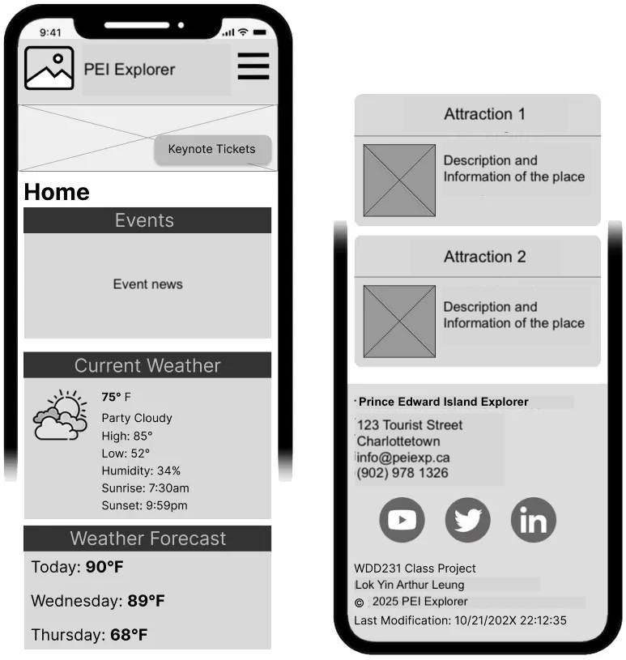
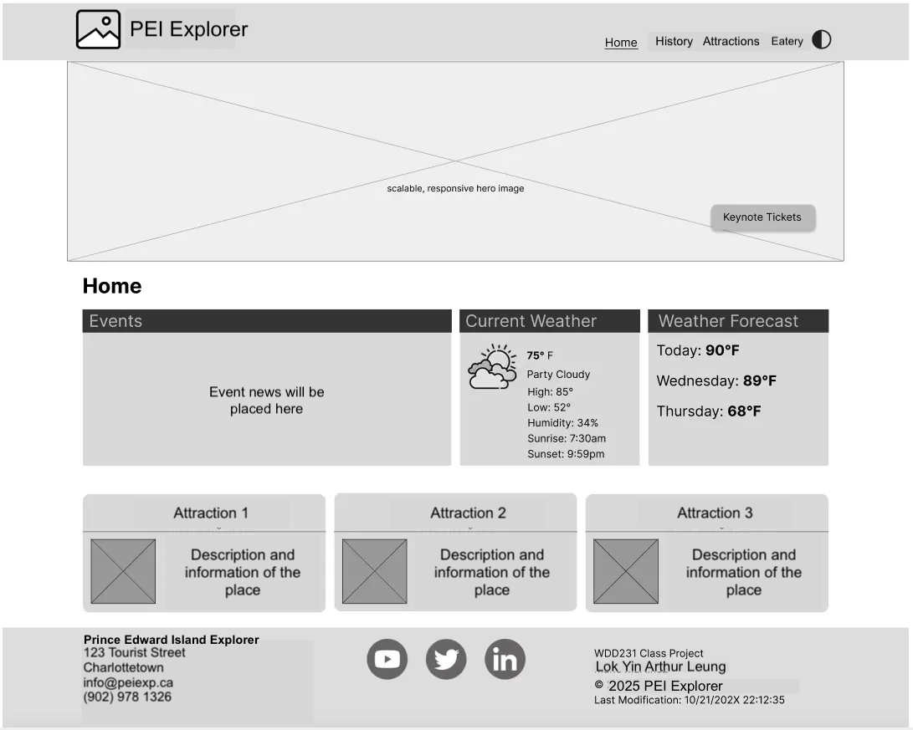

This name reflects the site’s focus on guiding visitors to explore Prince Edward Island’s top tourist attractions, offering an adventurous and informative experience.
This website will highlight the top tourist attractions in Prince Edward Island, designed as a guide for visitors. The landing page will welcome users with an overview of PEI, its charm, and a featured attraction of the month. A second page will offer a dynamic list of attractions (e.g., beaches, lighthouses, historic sites) pulled from a JSON file or a public tourism API, displaying details like location, description, visitor ratings, and seasonal tips. The third page will include a visitor resources section with a form for users to submit their own travel tips or questions, with responses displayed on a confirmation page. The site will feature responsive design, optimized images with lazy loading, a modal for attraction details, and localStorage to save users’ favorite spots.
This question will drive content about family-friendly attractions, including beaches, parks, and cultural sites, with tips for planning a family trip.
This scenario will guide content about PEI’s top beaches, including their locations, amenities, and seasonal activities, catering to beach enthusiasts.
The color schema for this site includes two main colors:
Mobile View:
Desktop View:
